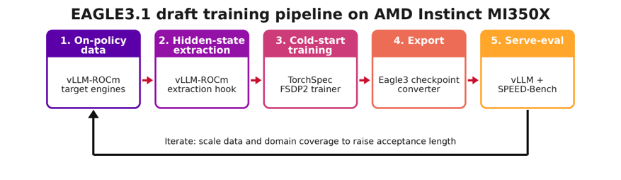
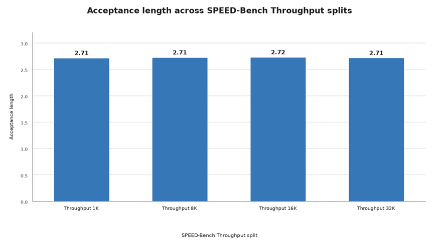
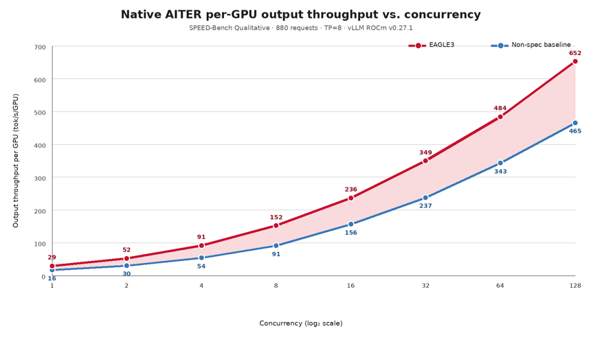

服务侧跑通之后，训练侧是另一半：Quark团队在单台8卡MI350X节点上，用ROCm、vLLM与TorchSpec组成的原生栈，从零为MXFP4量化的MoE目标模型MiniMax-M3训练EAGLE3.1草稿模型。
实测口径为官方SPEED-Bench：平均接受长度2.81，1K到32K上下文保持稳定；单卡输出吞吐415.2 tokens/s，比非推测基线高1.47倍，延迟中位数从13.15秒降到9.68秒。
标准自回归解码中，目标模型每步只产一个token。推测解码打破这个瓶颈：小草稿模型一次提议多个后续token，目标模型单次前向并行验证，接受的token成批输出，从首个拒绝处恢复。由于每个输出token都经过目标模型验证，推测解码无损：目标模型的输出分布保持不变。
接受长度（AL）衡量草稿是否在干活：每次目标模型验证步骤平均输出的token数。AL为1.0意味着草稿除保底token外没有加速；接受长度越高，目标模型每次验证确认的token越多，草稿值得认真训练。
EAGLE历代演进：EAGLE做特征层起草，EAGLE2提升接受率，EAGLE3把目标模型的低、中、高层特征与训练时测试目标结合。设计让草稿与验证器紧密对齐。EAGLE3草稿不是挂在旁边的通用小语言模型，而是针对目标模型内部表示训练，提议更容易被验证器接受。
EAGLE3与EAGLE3.1之别：本工作训练的是EAGLE3.1草稿。EAGLE3.1不是新方法，而是EAGLE3的小幅向后兼容改进：保留相同的特征层起草设计与相同的vLLM服务格式（LlamaForCausalLMEagle3），在草稿头内增加归一化以稳定训练。这对从零训练很关键。下文EAGLE3指方法与技术栈统称，EAGLE3.1指实际训练的草稿变体。
概括来看，EAGLE3.1草稿训练走五段管线。训练时目标模型提供监督草稿的隐藏状态；服务时验证草稿提议的token。

完整循环跑在单台8卡MI350X节点上：部分GPU承载产出隐藏状态的vLLM目标引擎，其余GPU跑FSDP2草稿训练器。
Quark 0.13把EAGLE3训练打包成可复用YAML配方与小型CLI。ROCm环境准备一次，再按目标选工作流：
Qwen3-8B是Quark 0.13验证过的工作流：CLI生成在策略数据、在8块GPU上训练、导出vLLM兼容草稿，并对基线与推测服务做基准测试。用--base_model选目标模型。
环境准备一次：setup命令幂等，检查Docker与ROCm GPU访问，准备验证过的训练与服务依赖及ROCm镜像，下载Qwen3-8B，并记录环境清单以便复现。
python3 -m quark.experimental.speculative_decoding.setup --base_model Qwen/Qwen3-8B运行验证过的默认配方：最短端到端形式。打包的recipes/eagle3_default.yaml提供数据、训练、导出与基准默认值，用户只需指明目标模型。
python3 -m quark.experimental.speculative_decoding.run --base_model Qwen/Qwen3-8B需要显式配方形式时：用--base_model设定目标。
python3 -m quark.experimental.speculative_decoding.run \
--config recipes/eagle3_default.yaml \
--base_model Qwen/Qwen3-8B \
training.output_dir=ckpts/qwen3-8b-eagle3 training.num_epochs=2最佳配方是可移植基线，而非针对某个LLM调好的配置。完整运行时，先从domain_manifest.full.example.yaml创建清单，把占位符换成评审过的数据源与许可信息，调整领域上限与留出策略，并使用全新的输出目录。选定的目标在策略上重新生成回答，运行时长与实测结果取决于清单与服务配置。
python3 -m quark.experimental.speculative_decoding.setup \
--base_model amd/MiniMax-M3-MXFP4
python3 -m quark.experimental.speculative_decoding.run \
--config recipes/eagle3_mxfp4_moe.yaml \
--base_model amd/MiniMax-M3-MXFP4 \
execution.profile=full \
data.domain_manifest=/absolute/path/to/domain_manifest.yaml \
training.output_dir=ckpts/minimax-m3-eagle3-full多数用户无需编辑YAML。核心用户侧字段如下；打包文件还保留更底层的草稿架构与原生参考设置。默认值选定验证过的8卡完整管线，同时把底层实现细节挡在用户工作流之外。
# recipes/eagle3_default.yaml
method: eagle3
execution:
backend: torchspec
model:
target_model_path: Qwen/Qwen3-8B
data:
auto_generate: true
prompt_dataset: allenai/tulu-3-sft-mixture
num_prompts: 150000
eval_size: 256
generation_max_tokens: 4096
training:
num_epochs: 2
num_gpus_per_node: 8
output_dir: ckpts/eagle3
benchmark:
num_prompts: 40
rounds: 3按默认值跑完，vLLM可加载的草稿与report.json落在training.output_dir下。可复用的模型与在策略数据资产会被缓存，后续配方运行更快，同时保留复现结果所需的精确配置与环境。
在ROCm上原生跑通管线，需要几块拼图协同，让训练、抽取与服务留在同一套AMD技术栈上：
拼在一起，训练到服务的循环成为单一ROCm原生工作流：Quark负责量化目标，ROCm与vLLM负责抽取与服务，TorchSpec负责训练核心。
以下选择比任何固定配方对草稿质量影响更大：
评估用官方SPEED-Bench工具（specdec_bench），张量并行8（TP=8），vLLM ROCm v0.27.1配原生AITER MXFP4 MoE内核，num_speculative_tokens=3，temperature 0。定性结果为两次完整运行的均值；每个固定上下文Throughput分片为一次完整运行。接受长度是每次目标模型验证步骤平均输出的token数：一个保底token加接受的草稿token。
下图显示，接受长度在1K到32K token的固定上下文SPEED-Bench Throughput分片上保持稳定：

定性集分项显示草稿最强处：代码、数学与检索增强生成领先；多语言、推理与STEM任务的接受长度也保持在2.8以上。11个类别平均接受长度2.81。
MiniMax-M3 EAGLE3.1草稿模型分领域接受长度
| 领域 | 接受长度 | 领域 | 接受长度 |
|---|---|---|---|
| Coding | 3.33 | Math | 3.17 |
| RAG | 3.14 | Multilingual | 3.07 |
| Reasoning | 2.91 | Summarization | 2.88 |
| STEM | 2.84 | Humanities | 2.70 |
| QA | 2.55 | Writing | 2.33 |
| Roleplay | 2.02 | Overall | 2.81 |
SPEED-Bench Qualitative集原生AITER服务指标
| 指标 | EAGLE3平均 | 非推测基线 | 变化 |
|---|---|---|---|
| 单卡输出吞吐 | 415.2 tok/s | 281.7 tok/s | 1.47倍 |
| 端到端延迟中位数 | 9.68 s | 13.15 s | 快1.36倍 |
| 首token延迟中位数 | 154 ms | 130 ms | 高18.5% |
EAGLE3数值为两次完整运行的均值。EAGLE3与匹配的非推测基线均用vLLM ROCm v0.27.1、原生AITER MXFP4、TP=8、并发48、temperature 0、12288 token最大模型长度、2048 token输出上限。变化相对非推测基线；TTFT反映首token延迟代价。
下图显示，EAGLE3在1到128的全部测试并发上都提升单卡输出吞吐；相对收益从并发1时的1.77倍收窄到并发128时的1.40倍，因为非推测基线逐渐接近饱和：

训练好的草稿已发布为amd/MiniMax-M3-EAGLE3.1，可配合vLLM推测解码用于amd/MiniMax-M3-MXFP4目标：
export VLLM_ROCM_USE_AITER=1
vllm serve amd/MiniMax-M3-MXFP4 --trust-remote-code --tensor-parallel-size 8 \
--block-size 128 --attention-backend TRITON_ATTN --moe-backend aiter \
--speculative-config '{"method":"eagle3","model":"amd/MiniMax-M3-EAGLE3.1","num_speculative_tokens":3,"attention_backend":"TRITON_ATTN"}'这次运行的两点观察，可推广到AMD Instinct上的EAGLE3草稿训练：
Quark 0.13现已提供实验性EAGLE-3工作流，覆盖在策略数据生成、草稿训练、vLLM导出与部署，以及接受长度与吞吐评估。
该版本包含验证过的Qwen3-8B快速上手，以及以MiniMax-M3-MXFP4为例的大模型最佳配方。后续计划扩展模型覆盖并增加更多推测解码方法。
Quark还附带AI Agent Skills帮助上手，可用于安装Quark并跑通首个量化工作流。
参考：https://rocm.blogs.amd.com/artificial-intelligence/eagle3-training/README.html